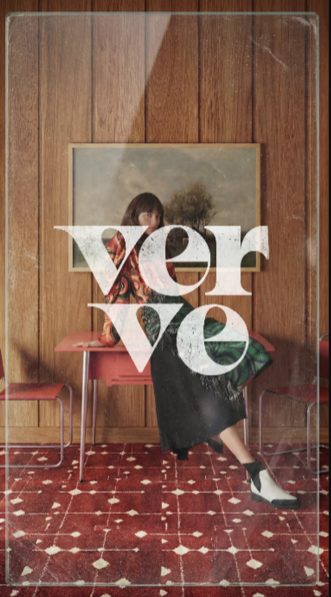

Figma Page 1:28
Image Portfolio
The first real asset from the Figma file is now in place. This editorial composition can anchor the portfolio page while the rest of the frame is translated into code.

A modern atelier for visual storytelling
Figma Page 1:28
The first real asset from the Figma file is now in place. This editorial composition can anchor the portfolio page while the rest of the frame is translated into code.
